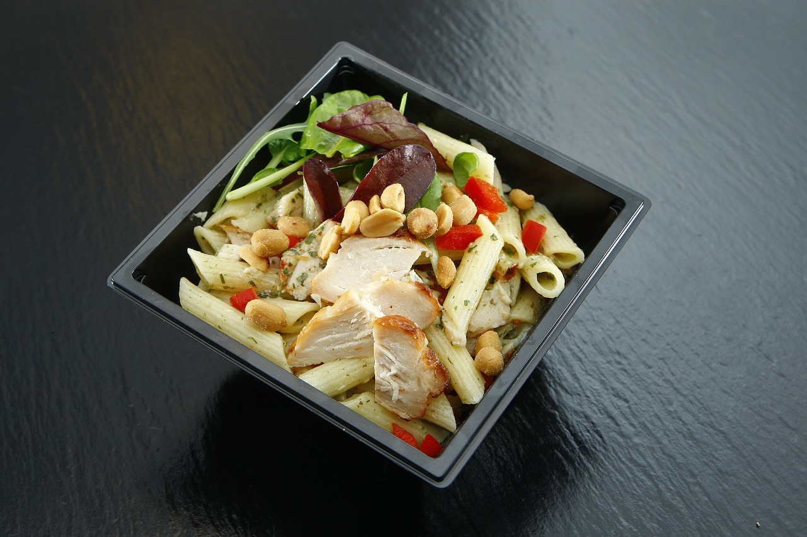
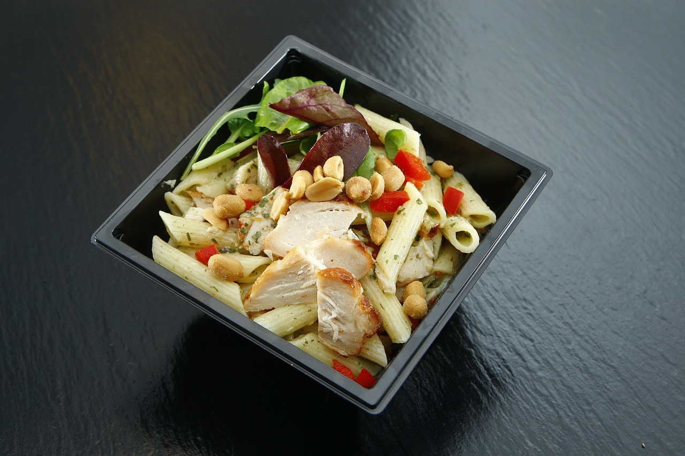
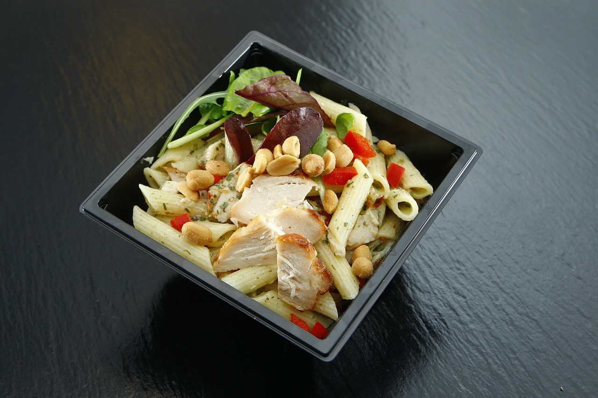

Call Us: (800) 268-0159


Food Service

Gordon Food Service(GFS) was founded by Van Westenbrugge in 1897.
It was first started as an egg and butter delivery service. Later it was named
Gordon Food Service and became one of the biggest wholesale food distributor
in US and Canada. The Company started with unloading margarine, washing-windows
floor cleaning. Their excellent services and products, the company reached to
billion dollars in 1994.